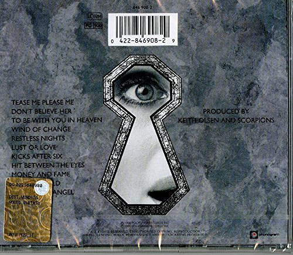

Crazy World

Released 6 November 1990
Recorded 1990
Studio Goodnight LA Studios, Los Angeles
Genre Pop-metal
Length 52:53
Producer Keith Olsen - Scorpions
Crazy World is the eleventh studio album by German heavy metal band Scorpions, released on 6 November 1990. The album peaked at No. 21 on the Billboard 200 chart for albums in 1991.That same year, the song "Wind of Change" reached No. 4 on the Billboard Hot 100 and "Send Me an Angel" reached No. 44 on the same chart.It also has the only Scorpions track to credit bassist Francis Buchholz as a writer, "Kicks After Six". This album was the band's first album in a decade and a half to not be produced by Dieter Dierks and is widely considered to be the last "classic" Scorpions album.
| Crazy World - Songs | ||
|---|---|---|
| 1. | Tease Me Please Me | 4:45 |
| 2. | Don't Believe Her | 4:56 |
| 3. | To Be With You in Heaven | 4:51 |
| 4. | Wind of Change | 5:12 |
| 5. | Restless Nights | 4:10 |
| 6. | Lust or Love | 4:23 |
| 7. | Kicks After Six | 3:50 |
| 8. | Hit Between the Eyes | 4:34 |
| 9. | Money and Fame | 3:50 |
| 10. | Crazy World | 3:50 |
| 11. | Send Me an Angel | 3:50 |